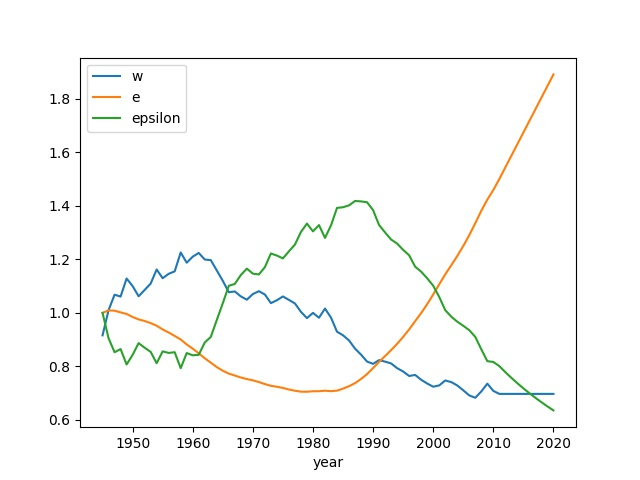
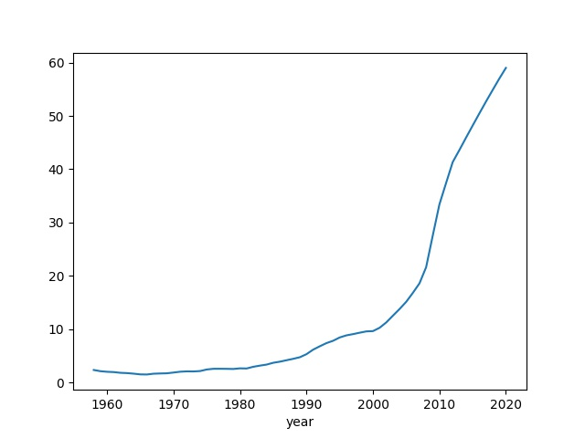

Age of Discord Math
Elites
According to [1] elite numbers, $E$ can change according to
$$ \dot{E} = rE + \mu N \qquad \qquad (1) $$
where $N$ is the general population, $r$ is rate of population growth, and $\mu$ is the balance of upward and downward social mobility. We can simplify by focusing on relative elite numbers $e = E/N$, we can subtitute $E = e N$, before that that derivative
$$ \dot{E} = \dot{e} N + e \dot{N} $$
Plug into (1) and since population growth is also $r$, meaning $\dot{N} = r N$
$$ \dot{e} N + e \dot{N} = r e N + \mu N $$
$$ \dot{e} N = r e N + \mu N - e r N $$
$$ \dot{e} = \mu \qquad \qquad (2) $$
The parts above are the logical result of natural growth of population and elites being the same rate $r$.
Looking at $\mu$, Turchin assumes the upward and downward social mobility, $\mu$ inversely related to relative wage. Regular people earning less means elites earning more.
$$ \mu = \mu_0 \left( \frac{w_0}{w} - 1 \right) $$
where $μ_0$ and $w_0$ are scaling parameters. Therefore (2) becomes
$$ \dot{e} = \mu_0 \frac{w_0 - w}{w} $$
Computing $w,e,\epsilon$ for US based on 1930-2010 data (below reproduces the graph 13.1 from AOD),
import pandas as pd
data = pd.read_csv('aod_psi.csv',index_col=0)
w_0 = 1
mu_0 = 0.1
lam = 0.5
relWage1 = data['ProdWage'] / data['GDPpc']
relWage1 = relWage1/relWage1.loc[1980]
relWage2 = data['UnskillWage'] / data['GDPpc']
relWage2 = relWage2/relWage2.loc[1980]
data['RelWage'] = (relWage1 + relWage2) / 2
cols = ['RelWage','RelDebt','Distrust']
data[cols] = data[cols].interpolate()
data = data[data.index > 1944]
data.loc[1945]['elite'] = 1
for t in range(1946,2021):
data.loc[t]['elite'] = data.loc[t-1]['elite'] + mu_0*( w_0 - data.loc[t-1]['RelWage'] ) / \
data.loc[t-1]['RelWage']
data['epsilon'] = (1 - lam*data['RelWage'])/data['elite']
data['epsilon'] = data['epsilon']/data.iloc[0]['epsilon']
data['Urbanization'] = data['Urbanization']/100.
data['Age20_29'] = data['Age20_29']/60.
data['RelDebt'] = data['RelDebt']/100.
data['Distrust'] = data['Distrust']/100.
res = data[['RelWage','elite','epsilon']]
res.columns = ['w','e','epsilon']
res.plot()
plt.savefig('psi1.jpg')

Political Stress Indicator
PSI, or $\Psi$, is shown as [1, pg. 237]
$$ \Psi = w^{-1} \frac{N_{urb}}{N} A_{20-29} \frac{\epsilon^{-1}e}{s} \frac{Y}{N} (1-T) $$
$N_{urb}/N$ is the urbanization rate, $A_{20-29}$ is the youth bulge index, $\epsilon$ is relative elite income computed previously. $Y/N$ is national debt scaled by GDP. Proportionality constant $s$ is the number of government employees per total population. Trust in government institutions is $T$, distrust is computed via $1-T$.
Again using US data,
data['PSI'] = 100*(1/data['RelWage'])*data['Urbanization']*data['Age20_29']*(data['elite']/data['epsilon'])*data['RelDebt']*data['Distrust']
data['PSI'].plot()
plt.savefig('psi2.jpg')

Turbulent times are ahead.
Predicting Wages
In Age of Discord Turchin shows an approach to predict wages, the formula is
$$ W_{t+\tau} = \alpha \left( \frac{G_t}{N_t} \right)^\alpha \left( \frac{D_t}{S_t} \right)^\beta C_t^\gamma $$
Where $W$ is the real wage, $G/N$ is the real GDP per capita, $D/S$ is the balance of labor demand and supply, and $C$ stands for the effect of non-market forces (culture).
Take log products become sums
$$ \log W_{t+\tau} = A + \alpha \log \left( \frac{G_t}{N_t} \right) + \beta \log \left( \frac{D_t}{S_t} \right) + \gamma \log C_t + \epsilon_t $$
The formula above is now regression-able.
Using frequency of certain words to gauge "the culture" of an era, below is the word "greed" via Google Books.
import impl as u, pandas as pd
df = pd.read_csv('gr-ngram.csv',header=None)
df['DATE'] = pd.to_datetime(["%d-01-01" % x for x in list(range(1800,2020))])
keyw = df.set_index('DATE')[0]
keyw.plot(title="Count for the Word 'Greed' in Published Work")

We put it all together below
# gdpcap wage prod lab_force minwage
df = u.get_fred(1970,['A939RC0A052NBEA','LES1252881600Q','OPHNFB','CLF16OV','FEDMINNFRWG'])
df = df.interpolate()
df3 = df.copy()
idx = list(range(1800,2020))
idx = ["%d-01-01" % x for x in idx]
keyw.columns = ['greed']
df3['greed'] = keyw
df3 = df3.interpolate()
df3.columns = ['G','W','Prod','S','M','greed']
df3['C'] = df3['greed'].rdiv(1)
df3['D'] = df3.G / df3.Prod
df3 = df3.resample('A').first()
df3['W'] = df3.W.shift(1)
import statsmodels.formula.api as smf
results = smf.ols('np.log(W) ~ np.log(M) + np.log(G) + np.log(D/S) + np.log(C)', data=df3).fit()
print (results.rsquared)
0.8857767077052572
df3['Wpred'] = df3.apply(lambda x: results.params['Intercept'] +
np.log(x['M'])*results.params['np.log(M)'] +
np.log(x['G'])*results.params['np.log(G)'] +
np.log(x['D']/x['S'])*results.params['np.log(D / S)'] +
np.log(x['C'])*results.params['np.log(C)'],axis=1)
df3['Wpred'] = np.exp(df3['Wpred'])
pred = df3[df3.index > '1980-01-01']
pred[['W','Wpred']].plot()

You can follow microblog postings on this and similar subjects on the main page of this site.
References
[1] Turchin, Age of Discord